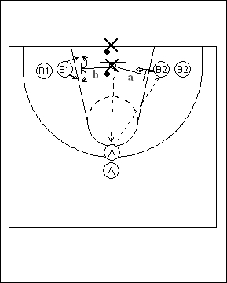

Catégorie : REBOND (Reb-11)
Déroulement
- Quatre emplacements pour les joueurs : une file face à l’anneau à hauteur de la ligne des trois points (A), deux files de part et d’autre de la raquette (B1 et B2) et une file de défenseurs (X) avec ballons sous l’anneau.
- Le premier défenseur (X) passe au premier joueur de la file A. Celui-ci passe au premier joueur de la file B1 ou B2 (soit ici : B2) pour un shoot immédiat. Le défenseur a alors deux options :
a) aller en défense sur le shooteur et disputer le rebond défensif; si le shooteur gagne le rebond offensif, on joue le un contre un jusqu’au panier marqué ou jusqu’au gain de balle du défenseur
b) aller en défense sur le non shooteur (soit le premier joueur de la file B1); si celui-ci gagne le rebond offensif, on joue le un contre un jusqu’au panier marqué ou jusqu’au gain de balle du défenseur.
- Après cet exercice, A remplace le rebounder offensif (B1 ou B2). Ce dernier va dans la file des défenseurs avec le ballon et X va en A.
Coaching points
- Insister sur la vitesse de réaction du joueur qui reçoit le ballon (shoot immédiat!) et du défenseur (choisir l’attaquant qu’il va chercher : le shooteur ou l’autre).